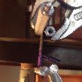
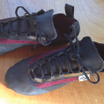

While studying at MIT, I spent a lot of time at the tiny MIT Bouldering Wall. Pulling off my shoes after each long climbing session, I'd wonder why high-performance climbing shoes had to be so uncomfortable.
The lingering feeling that this tradeoff between performance and comfort was unnecessary inspired a journey deep into the intersection of biomechanics and digital manufacturing.
As the sole employee of SFT for much of the last three years, I solved problems ranging from the detailed (determining which pattern and construction details result in key fit parameters) to the large-scale (breaking down the open space of creating a new product into actionable research/design/test plans).
Much of the research, design choices, and testing that resulted in SFT Climbing's custom-fit shoes is documented on the SFT Blog, but an in-depth description of several representative challenges are linked below:
| Process Challenge: | MechE Challenge: |
|---|---|
|  |  |
| Adhesive Parameters | Shoes for a Frostbite Amputee |